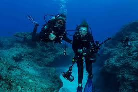
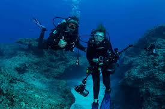

Biography
Sylvia Alice Earle is an American marine biologist, author, explorer, and lecturer. After graduating from Duke University with a Master's degree in science she decided to become a marine biologist because she has always been fascinated with the ocean and what lives in it. Currently she works with National Geographic as an oceanographer and an explorer.
The success of Earle's career was not an easy task. She faced many challenges along the way, but the biggest challenge was the lack of opportunities given to her because she was a woman. That did not stop Earle from doing what she loved and now she has accomplished so much like starting a marine technology company Deep Ocean Exploration and Research and the Tektite project. Alongside all those accomplishments Earle has managed to write 200 scientific publications which include 13 books and around 80 lectures around the world. People now consider her as "the face of marine biology". The most famous book Earle has written is The World is Blue: How Our Fate and the Ocean's Are One which tells the reader some facts about the ocean and ways humans can help restore it.